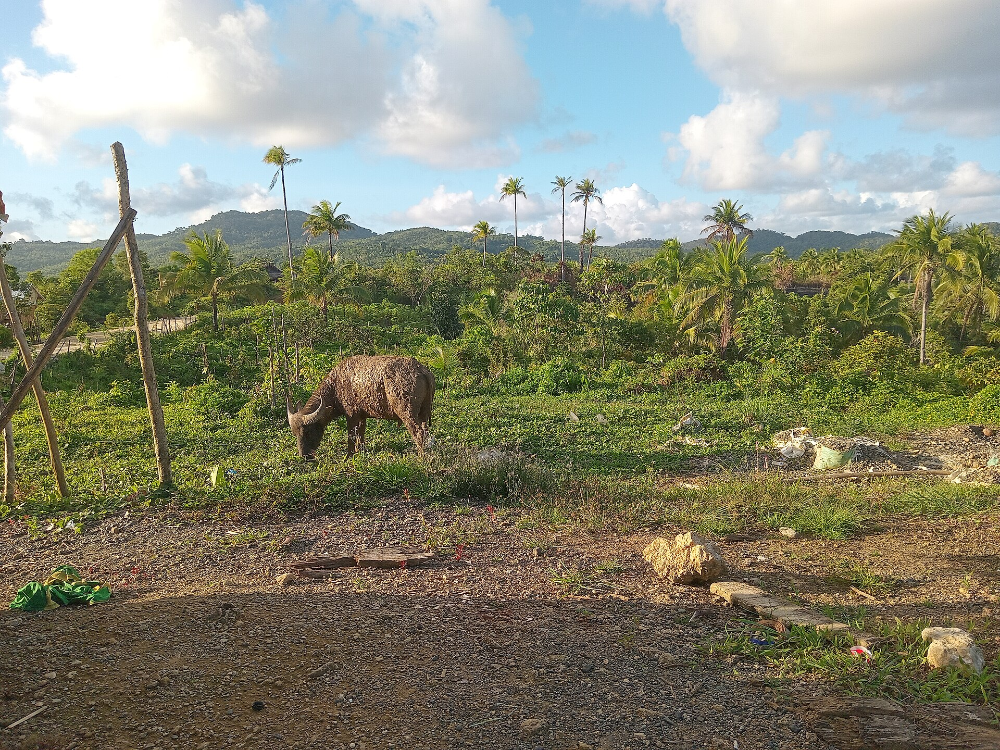

My farm
Your cattle
12 cattle with ear tags at your shed in Kuwaron, Gubug. Insured under AUTS/K, the national cattle scheme.
Registered12
Alive10
Died 8 Feb 20262
Insured valueRp120.000.000
Policy
- Policy
- POL-JSD-26-004091
- Scheme
- AUTS/K Cattle, Asuransi Jasindo
- Period
- 18 Dec 2025 – 17 Dec 2026
- Premium
- Rp2.400.000 a year
- Status
- Active
Last herd count

1 Feb 2026, 07:40 WIB · 12 of 12 tags readAnimals
| Tag | Breed | Sex | Age | Registered | Status |
|---|---|---|---|---|---|
| GBG-0481 | Peranakan Ongole (PO) | Cow | 5 y | 18 Dec 2025 | Alive |
| GBG-0482 | PO | Cow | 3 y | 18 Dec 2025 | Alive |
| GBG-0483 | Simmental-PO cross (SimPO) | Bull | 2 y | 18 Dec 2025 | Alive |
| GBG-0484 | PO | Cow | 6 y | 18 Dec 2025 | Alive |
| GBG-0485 | PO | Cow | 4 y | 18 Dec 2025 | Died 8 Feb · in claim |
| GBG-0486 | PO | Heifer | 2 y | 18 Dec 2025 | Alive |
| GBG-0487 | SimPO | Cow | 4 y | 18 Dec 2025 | Alive |
| GBG-0488 | Limousin-PO cross (LimPO) | Bull | 3 y | 18 Dec 2025 | Alive |
| GBG-0489 | SimPO | Heifer | 2 y | 18 Dec 2025 | Died 8 Feb · tag photo needed |
| GBG-0490 | PO | Cow | 3 y | 18 Dec 2025 | Alive |
| GBG-0491 | SimPO | Cow | 5 y | 18 Dec 2025 | Alive |
| GBG-0492 | PO | Cow | 4 y | 18 Dec 2025 | Alive |
Shed location
Kandang, Desa Kuwaron, Kec. Gubug, Grobogan · −7.0441, 110.6152